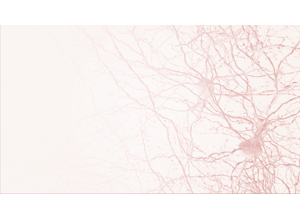
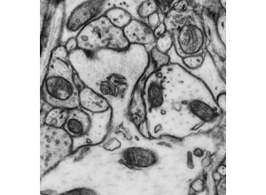
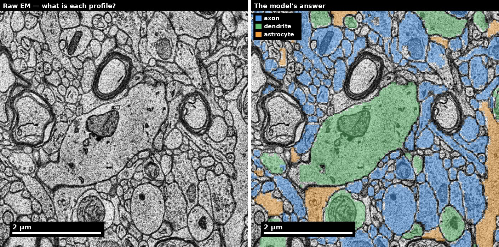
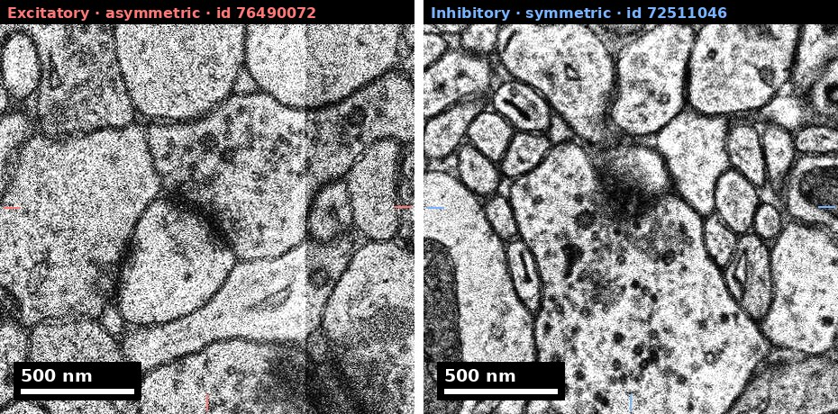
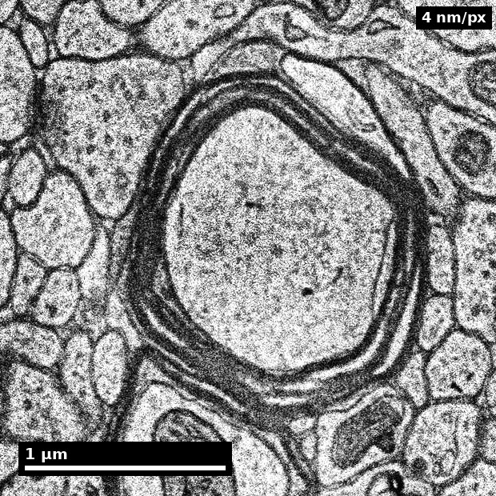
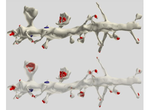
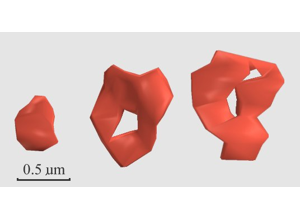
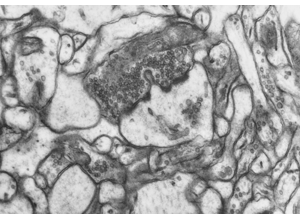
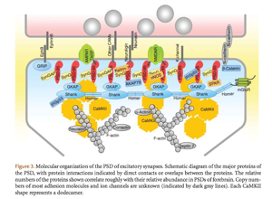
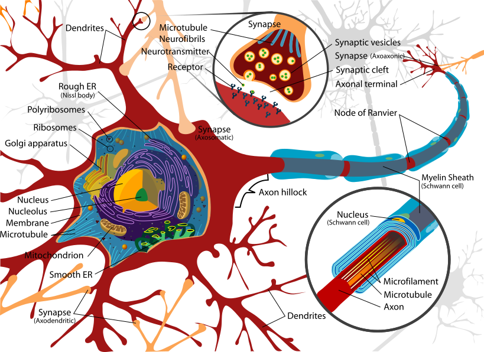

Slide 1 of 19

Human cortex · H01
Object segmentation over electron microscopy
H01 release · Lichtman Lab / Harvard & Connectomics at Google · CC BY 4.0
Shapson-Coe et al. (2024) · doi:10.1126/science.adk4858
Technical Course · Unit 06
Axons and Dendrites
In dense neuropil you usually cannot reach a soma. Classification has to work from local evidence.
Slide 2 of 19
Session outcomes (60 minutes)
- Classify neurites using a reproducible multi-cue protocol.
- Document uncertainty and escalation rationale for edge cases.
- Quantify classification quality with confusion-style summaries.
Slide 3 of 19
Pedagogical arc
- Model: expert classifies one neurite live.
- Practice: pair annotation on mixed-evidence panels.
- Consensus: adjudication and policy revision.
- Check: justified final call and uncertainty note.
Slide 4 of 19
Why this unit is high leverage
- Axon/dendrite identity errors distort connectivity statistics.
- Misclassification propagates into motif analysis and model priors.
- Reproducible identity policy is a prerequisite for trustworthy graphs.
Figure description and teaching notes
The arithmetic from unit §4. Classify 1,000 processes at 95% accuracy: 50 errors. Identity errors lose 50 edges and add 50 wrong ones. Direction errors each remove a true edge and add its reverse, so any direction-sensitive statistic takes double the damage.
Worse, the bias has a direction: flipping 5% of edges in a population with a true 5% reciprocal-pair rate raises measured reciprocity — toward the publishable answer. Instructor script: "This is a bias, not noise, and it points toward the exciting result. That is the worst possible property for an error to have."
Slide 5 of 19
Morphology baseline

Four cue families: organelle content, caliber geometry, synaptic polarity, context.
Source: Pat Rivlin training materials (MICrONS proofreading deck), RIV-AXDEN S01.
Figure description and teaching notes
Fix the four families first. Confidence comes from which families agree, not from how many observations of the same kind you stack up.
Family A, organelles: ribosomes effectively absent from axons — the single best cue when visible. Family B, geometry: axons hold caliber between boutons; dendrites taper, and daughter branches are thinner than the parent. Family C, polarity: vesicle cluster at a synapse -> presynaptic -> axon; PSD -> dendrite or soma. Family D, context: myelin, a fibre bundle, an AIS off a soma.
Slide 6 of 19
Dendritic cue panel

Look for geometry evidence that survives bad staining.
Source: Pat Rivlin training materials (MICrONS proofreading deck), RIV-AXDEN S08.
Figure description and teaching notes
The taper rule: at a dendritic branch point the daughters' cross-sectional areas are systematically smaller than the parent's; at an axonal branch point caliber is roughly preserved. It is a Family B cue fully independent of organelle staining quality — valuable exactly when the ribosome cue has failed you.
Slide 7 of 19
Classify these profiles, then check

Left: raw human cortex. Right: the model's answer key — blue axon, green dendrite, orange astrocyte.
Source: H01 release (Lichtman Lab, Harvard; Connectomics at Google), CC BY 4.0 · Shapson-Coe et al. 2024, doi:10.1126/science.adk4858 · site render.
Figure description and teaching notes
Works as a live exercise: cover the right panel, ask the room to call five or six profiles on the left, then reveal. Note how many are genuinely hard.
Instructor script: "The right panel is a six-class subcompartment model, not ground truth. Where you disagree with it, write down which cue family you are relying on — that is the evidence chain you would need to overrule it."
Slide 8 of 19
Real data: excitatory vs inhibitory synapse

Matched scale, nothing drawn over either density.
Source: H01 release (Lichtman Lab, Harvard; Connectomics at Google), CC BY 4.0 · Shapson-Coe et al. 2024, doi:10.1126/science.adk4858 · site render.
Figure description and teaching notes
At 4 nm a Type I PSD is 8–12 pixels — the asymmetry is genuinely subtle, and H01's excitatory/inhibitory classifier is right about 85–87% of the time. Both calls are Bin B claims: "putatively excitatory (asymmetric)", "putatively inhibitory (symmetric)". Where the claim matters, the presynaptic cell type is usually the stronger evidence.
Slide 9 of 19
Real data: a myelinated axon

- Compact myelin reads as a dark annulus at 4 nm.
- Individual lamellae (12 nm period = 3 px) are NOT resolvable here.
Source: H01 release (Lichtman Lab, Harvard; Connectomics at Google), CC BY 4.0 · Shapson-Coe et al. 2024, doi:10.1126/science.adk4858 · site render.
Figure description and teaching notes
Myelin is a Family D context cue and a decisive one: dendrites are never myelinated. In the protocol it is step 3 — myelin or a fibre bundle -> axon, high confidence. Use the second bullet to calibrate expectations about resolution: knowing what you cannot see at 4 nm is part of reading the image honestly.
Slide 10 of 19
A reconstructed dendrite and its spines

A spine emerging from a process is a high-confidence dendrite call.
Source: Pat Rivlin training materials (MICrONS proofreading deck), RIV-AXDEN S11.
Figure description and teaching notes
Spines are Family B: axons never bear them. In dense neuropil, though, you rarely see a whole reconstructed arbor like this — you see one cross-section. Run step 1 of the protocol first: a single clean synapse anywhere in view settles polarity faster than a long scroll, and the side carrying the vesicle cluster is the axon.
Slide 11 of 19
Side-by-side discrimination

Which cue would survive lower image quality?
Source: Pat Rivlin training materials (MICrONS proofreading deck), RIV-AXDEN S13.
Figure description and teaching notes
Ask learners to name three differences, label each with its family, then ask which they would still see at ten percent weaker membrane contrast. That ordering is their personal cue-robustness ranking — the calibration lab is where they measure it.
Slide 12 of 19
Ambiguous process case

Train weighted-evidence reasoning, not binary heuristics.
Source: Pat Rivlin training materials (MICrONS proofreading deck), RIV-AXDEN S14.
Figure description and teaching notes
Resist stacking more of the same evidence: high confidence requires two cues from different families. If everything available belongs to one family, the honest output is medium confidence with the missing family named.
Watch for over-read absence: no ribosomes in a 150–200 nm process is weak evidence, because it may be too thin to show a polyribosome in any one plane. Absence counts only when the feature would have been visible if present.
Slide 13 of 19
What a PSD is: the receiving side of the polarity rule

The dark thickening you see in EM is a protein scaffold on the postsynaptic membrane.
Source: Sheng M, Kim E (2011), "The Postsynaptic Organization of Synapses," Cold Spring Harb Perspect Biol 3(12):a005678, Figure 3, doi:10.1101/cshperspect.a005678. © Cold Spring Harbor Laboratory Press, all rights reserved — not openly licensed; confirm permission before this deck is shared outside the course.
Figure description and teaching notes
The PSD is why Family C works: a density on the receiving membrane means this process is postsynaptic. Then give the exceptions (unit §2) before anyone applies "PSD implies dendrite" mechanically:
1. Dendro-dendritic synapses — olfactory bulb, thalamus.
2. Axo-axonic synapses — chandelier cells onto the axon initial segment. The AIS is postsynaptic and still an axon; the tell is membrane undercoating plus fasciculated microtubules within roughly 20–60 µm of a soma.
3. Presynaptic dendrites in retina (amacrine cells).
4. Invertebrate neurons with mixed input/output regions on one neurite.
Instructor script: "What tissue am I in? That is a question about the dataset, not the image, and it should be answered once, in the protocol."
Slide 14 of 19
Operational classification protocol
- Initial morphology read.
- Synaptic/organellar context check.
- Continuity check in adjacent slices.
- Confidence assignment.
- Escalation if evidence conflict persists: unresolved ambiguity goes to the adjudication queue.
Figure description and teaching notes
The unit's local protocol, in cost order: (1) a synapse in view? which side? (2) ribosomes? (3) myelin or fibre bundle? (4) follow through z for 2–3 µm — beaded swellings with vesicles -> axon; steady taper or thinner daughters -> dendrite; a spine -> dendrite. (5) still unresolved -> UNCERTAIN, with the missing cue named.
Cue conflict is a detector, not a tie-break: vesicle clusters and ribosomes in the same cortical process is a merge-error alarm. Inspect the path between the two observations for where two processes touch.
Slide 15 of 19
Misconceptions to correct
- "Thin process = axon".
- "One bouton-like feature determines identity".
- "Ambiguous means annotator failed".
Slide 16 of 19
Activity
Classify three ambiguous neurites and submit:
- primary label,
- cue table,
- confidence,
- alternate label and why rejected.
Slide 17 of 19
Rubric checkpoint
- Pass: label plus two independent cues.
- Strong: includes continuity evidence and uncertainty logic.
- Flag: unsupported hard labels.
Slide 18 of 19
A textbook neuron, for vocabulary

Useful for naming compartments. Real neurites in neuropil do not come labelled.
Source: Wikimedia Commons, File:Complete_neuron_cell_diagram_en.svg. Public domain.
Slide 19 of 19
References and attribution
- Figures RIV-AXDEN: Pat Rivlin training materials (MICrONS proofreading deck).
- Real-data figures: H01 release, Shapson-Coe et al. (2024), doi:10.1126/science.adk4858.
- Kasthuri et al. (2015), Cell, doi:10.1016/j.cell.2015.06.054 — process morphology in dense reconstruction.